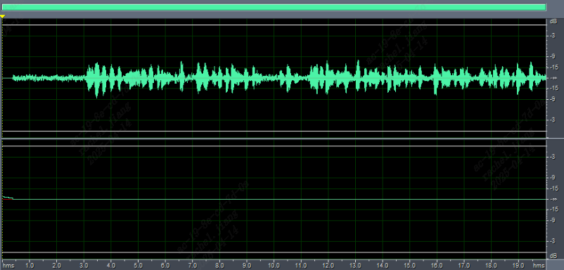
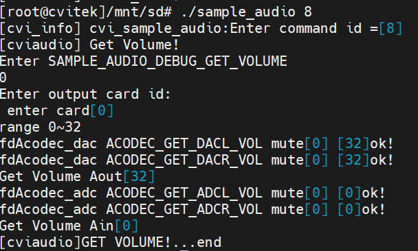
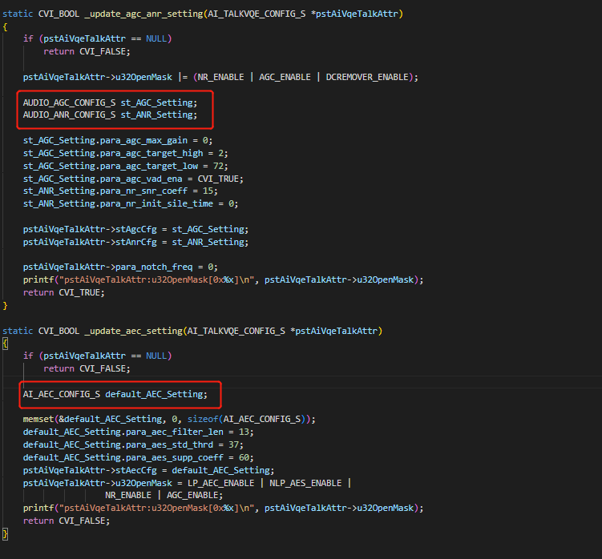

3. 回声消除调试¶
3.1. 基本检测：¶
AEC调试上环境上有几个需求:涉及录音、播音、音量、测试环境. 在基本需求满足后才是 AEC参数调试。
第一步：分别设置ADC，DAC的左右gain值:
在调整过程用户可能会需要分别调整左右mic 音量, 或是分别调整左右speaker音量, 可通过寄存器指令或sample_audio程序来设定。
左右声道同时设置如下:
./sample_audio 6 接着输入0, 8(音量值), 1(播音) 回车 speaker声道
./sample_audio 6 接着输入0, 8(音量值), 0(录音) 回车 mic录音音量
左右声道分开设置如下：
speaker映射关系如下：
1 ~ 32等级 (n * 0x10) - 1) //-24db - 3db
devmem 0x300a010 32 0x000F000F #(1 * 0x10) - 1)设置左音量值为1，设置右mic音量值为6。
mic映射关系如下：
devmem 0x0300a110 32 0x04000002 #设置左mic音量值为1，设置右mic音量值为6。左声道：低16bit, 右声道：高16bit。
#define ADC_VOL_GAIN_0 0x0001
#define ADC_VOL_GAIN_1 0x0002
#define ADC_VOL_GAIN_2 0x0004
#define ADC_VOL_GAIN_3 0x0008
#define ADC_VOL_GAIN_4 0x0010
#define ADC_VOL_GAIN_5 0x0020
#define ADC_VOL_GAIN_6 0x0040
#define ADC_VOL_GAIN_7 0x0080
#define ADC_VOL_GAIN_8 0x0100
#define ADC_VOL_GAIN_9 0x0200
#define ADC_VOL_GAIN_10 0x0400
#define ADC_VOL_GAIN_11 0x0800
#define ADC_VOL_GAIN_12 0x1000
#define ADC_VOL_GAIN_13 0x2400
#define ADC_VOL_GAIN_14 0x2800
#define ADC_VOL_GAIN_15 0x3000
#define ADC_VOL_GAIN_16 0x6400
#define ADC_VOL_GAIN_17 0x6800
#define ADC_VOL_GAIN_18 0x7000
#define ADC_VOL_GAIN_19 0xA400
#define ADC_VOL_GAIN_20 0xA800
#define ADC_VOL_GAIN_21 0xB000
#define ADC_VOL_GAIN_22 0xE400
#define ADC_VOL_GAIN_23 0xE800
#define ADC_VOL_GAIN_24 0xF000
第二步：确认录音和播放正常:
双向对讲前请先确认麦克风收音以及喇叭播音是正常的，可使用SDK内提供的
sample_audio程序进行验证。
[录音正常测试]：
会产出Cvi_8k_2chn.raw 档案.
[验证]：请取出至计算机播放看是否有录音收音的波形.如：
{kind=link}

上面的 波形要适中不能超过上面那条白线否则就消波失真了！太大或者太小了可以在“预设录音秒数:10 ”按回车之前到ssh终端执行 sample audio 9 分别输入11回车选择设置ADCL子功能，再输入7回车。7这个gain值客户根据自己的波形实际情况设置。
[播放正常测试]：
./sample_audio 5 –list -r 8000 -R 8000 -c 2 -p 320 -C 0 -V 0 -F Cvi_8k_2chn.raw -T 10 语音播放参数.
(channel:2/ sample rate:8000/period size:320/ VQE on:0)
[验证]: 播音时确认喇叭有出声且大小 合适没有爆音，杂音，破音等明显失真。
第三步：确认回声消除效果是否正常:
在客户端使用远程对讲程序前, 我们可以通过下面的方式验证板端回声消除效果。
[AEC效果测试]:
执行 touch /tmp/ain_record 命令 和 touch /tmp/dump_ao_output命令。（如果多次进行测试，每次测试前执行：rm /tmp/*.pcm进行删除，不能测试太长时间否则pcm文件会把ddr内存耗光导致系统卡死。）
再执行： sample_audio 10
./sample_audio 10 –list -r 8000 -R 8000 -c 2 -p 320 -C 0 -V 1 -F play.wav -T 10
收音参数(sample rate:8000/ chn:2/ period size:320)
并将VQE / AEC 设为on, 并设定录音秒数,要播放的文件名。开始播放2s后（播放的是之前你自己朗读的文字内容）， 人对着mic说话如 （123456789abcdef），客户可以用20s时长。录音一段时间后双击enter后等待结束。
在输入record时间回车前到ssh终端设置合适的ADCL,ADCR,DACR的gain值。方法上面有提到： sample audio 9 分别执行ADCL:11->将设置10; ADCR:12->设置为1；DACR:10-> 设置为8。其中10，1，8这三个值客户自行根据实际情况调整。把这三个值记住最后在自己的对讲程序中使用。
[验证]:
产出sample_record.raw。执行cp /tmp/*.pcm ./拷贝到当前目录。
把 sample_record.raw 和ain_record.pcm 文件拷贝到电脑用audacity / Cool Edit等免费播放软件查看
正常情况下 sample_record.raw是单声道只能听到“123456789abcdef
”没有断续说明效果是ok的，在实际对讲程序中sample_record.raw的声音就是发给对方听的。
如果还能听到文字声或“ 123456789abcdef ”有断续丢字则说明效果不好。
ain_record.pcm文件是立体声
左声道是mic采集到的声音（包含人说话声*123456789abcdef* 和文字声），
右声道只有喇叭的声音也就是文字声（左右声道 波形要适中不能消顶失真）。
3.2. [回传参数(如果调试结果不理想状况下)]¶
序号 |
命令 |
对应文件名 |
注释 |
|---|---|---|---|
1 |
touch /tmp/ain_record |
/tmp/ain_record.pcm |
从底层获取的最原始pcm数据 |
2 |
touch /tmp/dump_before_aec |
/tmp/dump_before_aec.pcm |
vqe前的pcm(none bind mode) |
3 |
touch /tmp/dump_after_aec |
/tmp/dump_after_aec.pcm |
vqe后的pcm(none bind mode) |
4 |
touch /tmp/dump_ao_output |
/tmp/dump_ao_output.pcm |
播放的声音原始数据 |
AEC效果不好时需要提供的资料(请先确保满足AEC算法基础要求):
1.简易的txt文件 内部注明：
cv180x… project名称
sample rate
{kind=link}

vqeconfig.txt里面包含code中下图结构体各个参数值:
{kind=link}

2.dump文件:
/tmp目录的*.pcm 文件